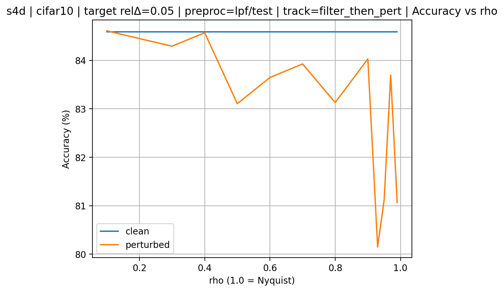

Topo_S4
Work-in-progress research project on frequency-localized sensitivity, sample-wise dynamic persistent-homology masking, and structure-aware spectral control for the S4 family (S4 / S4D / S4ND).
Links
What changed this week
Replaced the slow Pathfinder32 file-by-file loader with a one-time
.pt RAM-caching pipeline, cutting startup from
roughly 8 hours to under 3 minutes on Colab local SSDs.
Shifted from global dataset-level PC masks toward
sample-wise dynamic PH masking with exact H0 superlevel persistence
and a lightweight controller predicting τ and α per sample.
In 1D flattened-image experiments, the controller collapsed to a near-identity regime, consistent with flattening-induced spectral distortion rather than a failure of the PH controller itself.
In 2D S4ND + 2D PH masking, the controller became active:
τ increased substantially and the pass ratio decreased, showing that the
masking module engages once spatial structure is preserved.
Progress detail (≤ 300 words)
This week I optimized the Pathfinder32 data pipeline and pivoted the masking strategy from
global dataset-level PC masks to sample-wise dynamic PH control. First, I replaced the previous
file-by-file Pathfinder32 loader with a one-time .pt RAM-caching pipeline,
reducing startup time from roughly 8 hours to under 3 minutes on Colab local SSDs.
This removed the main systems bottleneck from last week.
Methodologically, I moved away from learned global masks and implemented exact
O(N log N) PH-based dynamic masking. For each sample, exact H0 superlevel persistence
is computed on the spectrum, and a lightweight MLP predicts mask threshold τ
and sharpness α. The goal is to preserve informative spectral structure while
attenuating noisy components adaptively.
In 1D flattened-image experiments (LRA Image / flattened Pathfinder32), the controller
consistently collapsed to a near-identity regime: τ → 0.05 and pass ratio
≈ 0.99, leading to only marginal accuracy changes. This behavior is consistent
with a dimensional-mismatch explanation: flattening 2D images into 1D introduces
raster-scan spectral distortion, so strong 1D masking would likely destroy real spatial edges.
To test that diagnosis, I migrated Pathfinder32 to a 2D S4ND + 2D PH masking setup.
In this structure-preserving setting, the controller became active: τ rose from
about 0.15 to 0.67 and the actual pass ratio dropped substantially. Although baseline S4ND
accuracy is still unoptimized (~53%), the masking mechanism now behaves as intended.
Next week, I will evaluate the 1D PH controller on native 1D data (SC35), where no 2D→1D
flattening distortion is present.
Mechanistic validation

τ and a corresponding drop in actual spectrum pass ratio.
This is more consistent with a dimensional-mismatch issue in 1D flattened images than with
a failure of the PH controller itself.
Current direction
- Use SC35 as the decisive next benchmark for native 1D validation.
- Compare pure S4 against PH-masked S4 using both accuracy and controller trajectories (
τ, pass ratio). - Keep Pathfinder32 as the image-side structure-preserving benchmark for S4ND + 2D PH masking.
- Treat earlier global PC-band / PC-weight results as archived baselines rather than the current main direction.
Archived earlier direction
Earlier PC-band / PC-weight results and notes
Earlier experiments focused on dataset-level phase-coherence masks (PC-band / PC-weight) and scope ablations on sequential CIFAR-10 and Pathfinder32. These runs remain useful as historical baselines, but the current active direction is sample-wise dynamic PH masking.
Last updated: 2026-03-08.